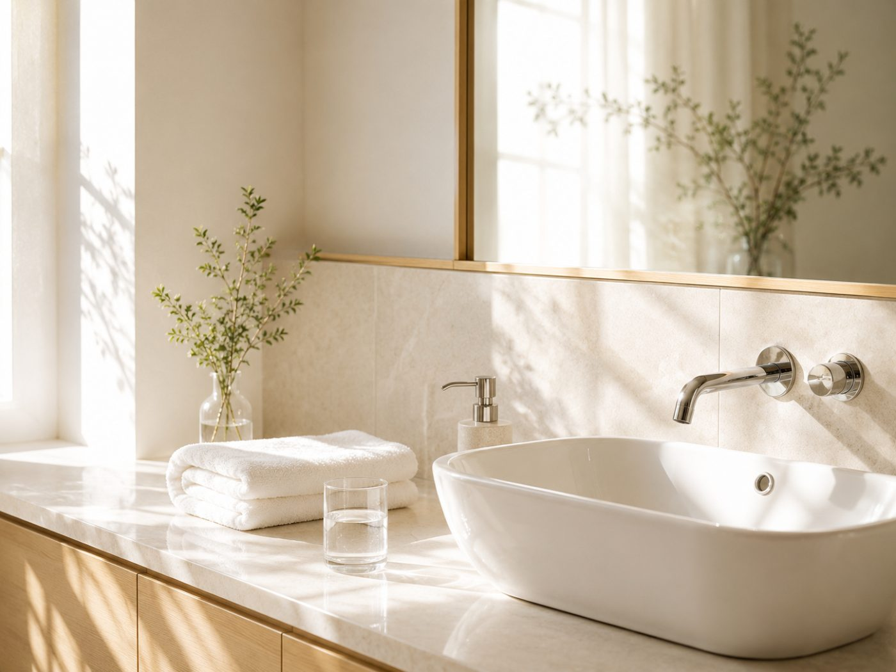

WATER
足りないと、
体は水をためる。
むくみを避けるために水を減らす。これは最もよくある間違いで、そして逆方向の対処です。

先に結論です。むくみの原因は水ではなく塩分です。水分が不足すると体は今ある水を手放さなくなるので、控えるほどむくみます。やるべきは、塩分を落として水をしっかり摂ることです。
仕組み
体は塩分の濃度を一定に保とうとします。塩分を多く摂ると濃度が上がるので、それを薄めるために水を抱え込みます。これがむくみの正体で、余分な水そのものが原因ではありません。
ここで水を控えると、濃度はさらに上がります。体は「水が足りない」と判断して、今ある水を手放さなくなる。結果としてむくみが長引きます。
逆に水を十分に摂ると、濃度が下がって余分な塩分と水が排出されます。抜くために入れるというのが正しい順番です。
1日の目安
| 項目 | 目安 | 補足 |
|---|---|---|
| 1日の総量 | 1.5〜2L | 食事に含まれる分は別 |
| 1回の量 | コップ1杯（200ml） | 一度に大量に飲まない |
| 回数 | 1日8回程度 | 2時間おきくらい |
| 温度 | 常温か温かいもの | 冷たいものは体を冷やします |
| 避ける時間 | 就寝直前 | 朝の顔に出ます |
一度に大量に飲んでも吸収しきれず、そのまま出ていきます。分けて飲むほうが効率的です。
塩分を落とす
水を増やすのと同時に、こちらも必要です。外食が続く週は塩分が跳ね上がります。
- ラーメン、鍋、味の濃い外食を減らす。1食で1日分の塩分に届くことがあります
- 加工食品を減らす。ハム、ちくわ、インスタント。味が濃くなくても入っています
- 汁物を残す。具だけ食べれば量はかなり減ります
- カリウムを摂る。バナナ、ほうれん草、アボカド。塩分の排出を助けます
お茶やコーヒーは数に入るか
基本的には入ります。ただしカフェインの多いものは利尿作用があるので、それだけで1.5Lを賄うのは避けてください。半分以上は水か麦茶にするのが無難です。
アルコールは数に入りません。飲んだ量以上に水分が出ていくので、飲んだ日は追加で水が必要です。
それでもむくむ場合
塩分と水分を整えても脚のむくみが引かない場合、原因は流れの側にあります。長時間同じ姿勢でいると、水分が下に溜まったまま戻りません。
立ち仕事やデスクワークの場合は脚のむくみ対策に。
式の前日と当日
前日に水を控えるのは最も避けたい対処です。普段どおり摂って、塩分だけ落としてください。当日の朝も同じで、我慢すると顔に出ます。
前日の食事は前日の食事、当日朝はむくみを引かせる手順に。
次に読む
むくみ全体の考え方はむくみのページ、食事の組み立ては食事で整える体づくりに。